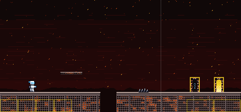
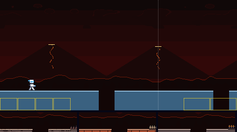
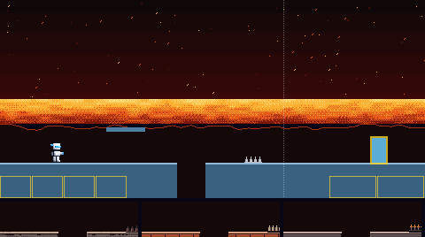
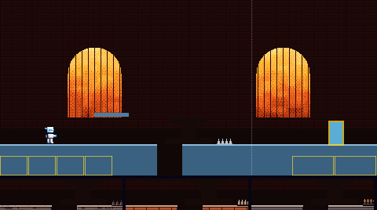
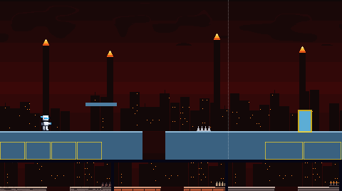
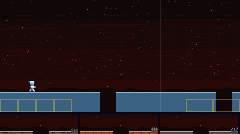
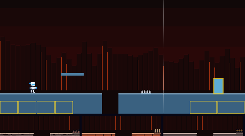
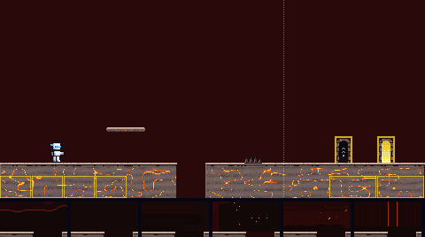
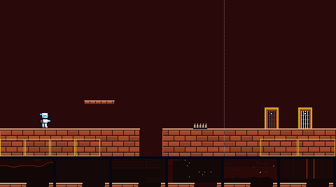
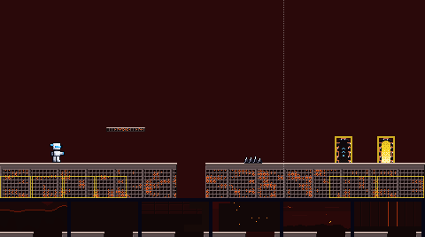

The way to Blaze Man's door. Six backdrops, and three materials (each a floor, platform, spikes, boss door and exit door), all built from his colours. Batch 1 of 3.
Picked by the owner on 5 Nov 2026, in their words: "5c but remove the fast moving layer of embers, and have the embers slowly drift downward. spikes should be a shiny jet black obsidian glass. doorway should use be a stone arch made of obsidian glass with tera cotta colored mortar"
Done: the fast near layer of embers is gone, and the rest drift slowly down and go out. The spikes are shiny jet-black obsidian glass. Both doors are arches of obsidian glass blocks with terracotta mortar; the boss door keeps its cyan sign and the exit door its gold light. Backdrop 5 and material C below are redrawn to match. The other variants are kept as they were offered. Batch 1 is in the game.
Backdrop 5 behind material C, with the player standing still so the embers' slow fall shows. The boss door is on the left, the exit door on the right. This picture moves.

Each is shown behind today's plain pieces, so only the backdrop changes. The strip under it is its pit edge with floors A, B and C in front. The two marked MOVING scroll in layers, the far ones slower; their pictures move.






Each shows the floor with a pit, a platform, spikes, the boss door (left) and the exit door (right), in front of today's flat colour. The strip under it is its pit edge against backdrops 1 to 6. The contrast numbers are the worst against any of the six; the game asks at least 2 for the ground, 4.5 for its lit edge and 4.5 for the white player on it.


